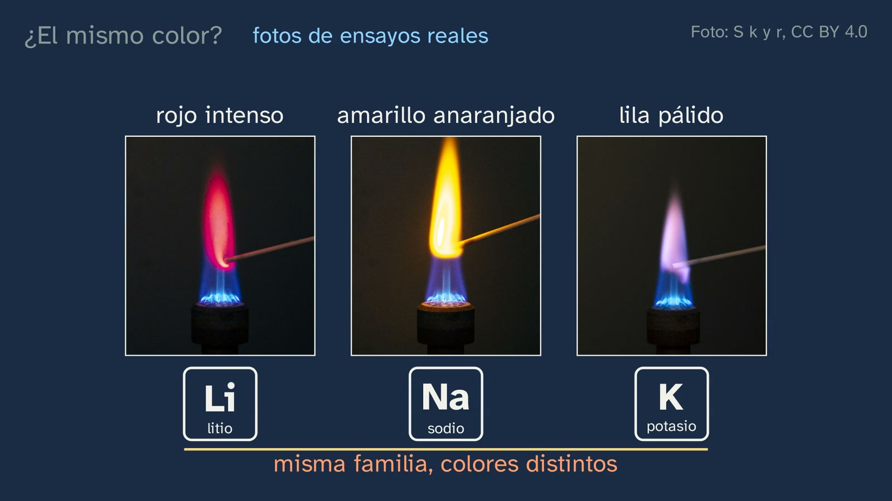
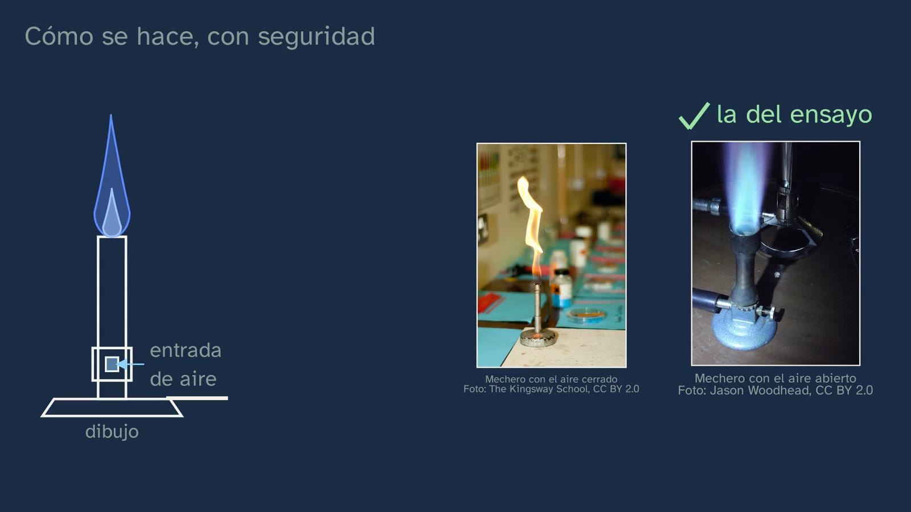
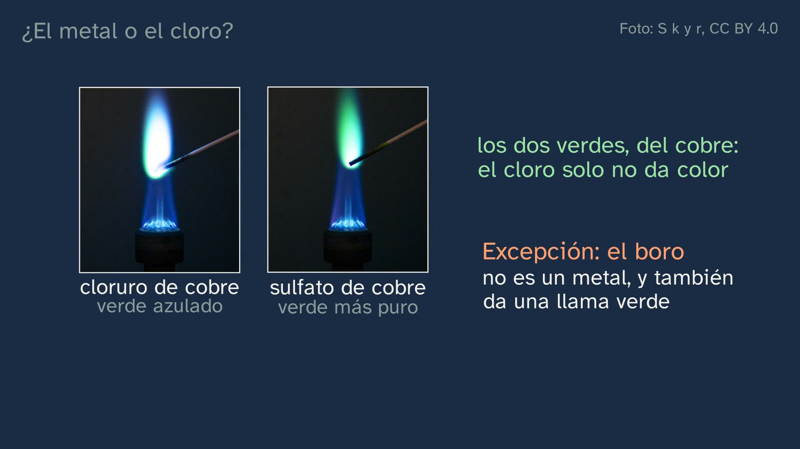
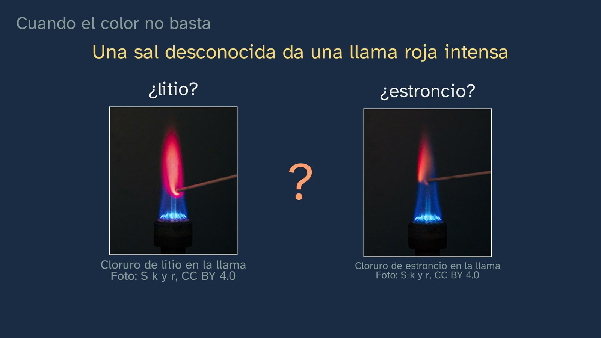

The colour of flames
In a nutshell
This is the topic's first lab class, and it deliberately comes before the theory: today students look closely at the phenomenon, and the explanation arrives in class 3. It opens with two things students have seen (salty water boiling over onto a gas hob turns the flame yellow; in fireworks, strontium usually makes the red and barium the green) and with the bet class 1 left open: lithium, sodium and potassium belong to the same family, so will they give the same colour? Photos of real tests say no: deep red, orange-yellow and pale lilac. That puzzle, same family but different colours, stays open for class 3. Then, how the test is done in a school, and safely: the blue flame of the Bunsen burner and why not the yellow one, the Royal Society of Chemistry's wooden-splint method instead of the wire usually cleaned with concentrated hydrochloric acid, the hazard pictograms of the salts read one by one, why it is not done at home, and a warning that also applies to teachers: never the methanol "rainbow flame". The heart of the class is a scientist's question: all the salts contain chlorine, so what if the colour came from the chlorine? It is answered by controlling variables both ways (chlorine in all of them while the metal changes; the same metal while its partner changes), with one nuance, copper, whose shade changes with its partner, and one true exception, boron, which is not a metal and still colours the flame. The misconception "the colour is down to the fire" is taken apart, and the class ends at the limit of the eye: with a single flame in front of you, lithium's red and strontium's red are easily confused, and sodium's yellow hides almost everything. Abril signs off with the sentence to remember: to find out what causes what, change one thing at a time.
Objective. By the end, students will be able to identify some metals by the colour they give a flame, explain how the test is done safely and how we check that the colour comes from the metal, and why colour is sometimes not enough.
What this sheet adds. The protocol for the test in the school lab (the RSC's wooden-splint method, with its concentrations, adapted to what Spain's technical prevention note NTP 767 recommends, and with waste management); a warning about methanol for teachers, with its sources; an honest note on what actually emits the colour in the flame, which the class rightly sums up as "the metal sets the colour"; the solutions to the exercises and the mission; and a lab activity, "The unknown salt", with its worksheet.
For readers outside Spain: the Bachillerato is the last two years of secondary school (ages 16–18), and ESO is the compulsory stage before it (ages 12–16). The video is in Spanish, with English subtitles; the images on this sheet come from the video and keep their Spanish text. In Spain the decimal separator is a comma (0,5 mol/L means 0.5 mol/L); this English sheet uses points.
Curriculum
Spain's Royal Decree 243/2022, Physics and Chemistry (consolidated text in the Official State Gazette, BOE, checked on 02/10/2026). Our translation of the official Spanish text. The minutes are those of the video.
| Element | What the decree says | Where the class works on it |
|---|---|---|
| Core knowledge (block A, "Chemical bonding and the structure of matter") | "Electronic structure of atoms following the analysis of their interaction with electromagnetic radiation: explanation of an element's position in the periodic table and of the similarity in the properties of the chemical elements in each group." | Only begun, and it is worth saying so: the class observes the light each element gives off in a flame (3:57 and 4:21) and leaves electronic structure for class 3. The second half of this item appears as a problem: lithium, sodium and potassium are alike and in the same group, yet their flames differ (3:35 to 4:21). Class 3 takes up that puzzle |
| Specific competence 1 | "To solve problems and situations related to physics and chemistry, applying the appropriate scientific laws and theories, in order to understand and explain natural phenomena and show the role of these sciences in improving the common good and in everyday life." | The gas flame that turns yellow and fireworks (2:36 and 2:40), and the fireworks mission (13:01). Its description speaks of "using scientific tools to collect and record data": that is the observation table in this sheet's activity |
| Specific competence 2 | "To reason soundly, using scientific thinking and the skills related to the work of science, applying them to observing nature and the environment, asking questions and forming hypotheses, and validating them through experimentation, inquiry and the search for evidence." | The bet (3:35) and the question of metal or chlorine (8:07 to 9:39). Its description asks students "to use scientific methodology with greater rigour in Bachillerato": here, controlling variables |
| Specific competence 3 | "To handle the flow of information properly and confidently in the different registers of scientific communication, such as the nomenclature of chemical compounds, the use of mathematical language, the correct use of units of measurement and safety in experimental work, in order to produce and interpret information in different formats and from diverse sources." | Safety in experimental work (4:51 to 8:07): the burner, the method, the pictograms read one by one. Its description mentions "the safety regulations of scientific laboratories" |
| Criterion 1.1 | "To apply scientific laws and theories in the analysis of everyday physical and chemical phenomena, understanding their causes and explaining them using a variety of formats and media." | Partly, and it should be said: the class identifies the cause of the colour, the metal (8:33 to 9:39), in two everyday phenomena (2:40), but the theory that explains it comes in class 3 |
| Criterion 2.1 | "To formulate and test hypotheses as answers to different problems and observations, handling experimental work, inquiry, the search for evidence and logical-mathematical reasoning with ease." | The bet on the same colour, refuted with photos (3:35 to 4:21); "what if the colour came from the chlorine?", with a pause (8:07), and its test (8:33 to 9:39); exercise 2, which asks students to design the same test for lithium (12:21) |
| Criterion 2.2 | "To use different methods to find the answer to a single question or observation, comparing the results obtained and thereby making sure they are consistent and reliable." | The same conclusion by two routes: changing the metal with chlorine in all of them (8:33) and changing the partner with the same metal (8:48). And in the detective case (10:18 to 11:58), three methods for a single question: comparing the flame with known salts side by side; the control splint; cobalt glass. Plus the instrument of class 4 |
| Criterion 3.4 | "To put into practice the knowledge acquired in scientific experimentation in the laboratory or in the field, including knowledge of its materials and basic rules of use, as well as the safety rules of these spaces, and understanding the importance for scientific and entrepreneurial progress of experimentation being safe, without compromising one's own or others' physical integrity." | In the video, it is explained (4:51 to 8:07); it is truly put into practice with this sheet's protocol and activity |
What students bring. From class 1: lithium, sodium and potassium form a family, and the question that class ended with, "will they give the same colour?". From ESO (Royal Decree 217/2022): the rules for using the lab and working with hypotheses, which the decree asks for in years 1 to 3 in these words: "identifying and formulating questions, forming hypotheses and testing them experimentally". Two caveats. Reading a hazard pictogram is compulsory content in ESO only in the regions of Madrid (years 2 and 3) and Andalusia (year 3): most students do not bring it, which is why the class reads each one. And some students have already seen flame colours in year 3 of ESO, because some textbooks include them, sometimes with a wire and concentrated hydrochloric acid or with alcoholic solutions sprayed onto the burner; what this class adds is the reason behind each decision: the method, safety, controlling variables and the limit of the eye.
How the class is built
Video chapters
About fourteen minutes, in ten chapters. It follows the channel's learning principles (in Spanish) and the format of the lab classes: first the phenomenon, then the theory; what you see is real (photos and one video under free licences, with their authors on screen); safety, right when it is needed; and whatever the whiteboard draws is labelled as a drawing, never painted over a real photo. Abril appears on camera four times: in the greeting (0:00), with the hook (2:36), halfway (9:39) and in the goodbye (13:54).
| Chapter | What happens | Why this way |
|---|---|---|
| What we'll see (0:00) | Abril says hello. On the board, the map of the topic: the second of six classes and the first lab class. Today we look; the explanation comes in the next class. | Knowing where you are organises what you learn, and warning that today there is no explanation stops students waiting for an answer that does not come. |
| A question from the previous class (0:25) | What did lithium, sodium and potassium have in common? Pause (0:32). They are soft, react with water and give off hydrogen: the family of the alkali metals. | Retrieving class 1 just before putting it to the test. |
| Solutions to the previous class (0:54) | The triad of calcium, strontium and barium (88.7 against 87.62); bromine (81.2 against 79.90); cobalt before nickel, by atomic number, and why it weighs more: it has more neutrons, and a neutron weighs almost the same as a proton (59 particles in the nucleus against 58). | Spaced practice, with the reason and not just the result. |
| Coloured flames (2:36) | The hook, on camera. A drawn kitchen, with the colour computed from sodium's light, and the real photo; fireworks. "Why do these metals colour the flame, each with its own colour?", and the answer, postponed. | Two things seen in everyday life, with the same question underneath. |
| The same colour? (3:15) | Why salts are used and not the pure metal. The bet from class 1, with a pause (3:52). Real photos of lithium, sodium and potassium; the puzzle, for class 3; four more metals (calcium, strontium, barium and copper) and one that does not colour the flame, magnesium. | Predict before seeing: the misconception ("same family, same colour") comes from what was just recalled. |
| How it's done, safely (4:51) | Lab coat, goggles and hair tied back. The burner: with the air hole closed, a yellow flame from soot; open, the gas burns completely and the flame is blue. The RSC's splints: soaked in distilled water, one for each salt. The wire, the traditional method, with its corrosive acid, in a real video. The pictograms, read one by one: the skull on barium chloride (and the Spanish guidance that asks for it not to be kept in a school), the corrosion pictogram on strontium and copper, the exclamation mark and the environment pictogram on copper. Why it is not done at home. The methanol "rainbow flame": the accidents in the United States, the fire that leaps to the bottle, Fleming's sentence and NTP 767. | Safety right when it is needed (criterion 3.4), each rule with its reason. |
| The metal or the chlorine? (8:07) | What if the colour came from the chlorine? Pause (8:28). Seven chlorides, seven colours; sodium with sulfate and with carbonate, the same yellow (drawn); controlling variables; the copper nuance and the boron exception. Abril, on camera (9:39): in these salts, the metal sets the colour. | The heart of the class: students design the test before hearing it, and the nuance and the exception are told as such. |
| The mistake: "it's the fire" (9:43) | The same flame, and one colour for each salt. It is true that with the air hole closed the flame is yellow: that is why the blue one is used. | The typical misconception, taken apart with what has already been seen. |
| When colour is not enough (10:18) | A deep red flame: lithium or strontium, how would you find out? Pause (10:37). With a single flame in front of you it is easy to be wrong; the most the eye can do is compare it with known salts, side by side. Sodium is almost everywhere and hides potassium's lilac; the control splint with distilled water; cobalt glass, drawn separately. The eye has a limit, and the instrument, made with a DVD, comes in class 4. | The limit of the method, told honestly, with what the eye can do, and the bridge to class 4. |
| Practice and keep thinking (11:58) | Recap; three exercises, with a pause (12:58); the fireworks mission; the open question; class 3 and goodbye. | The solutions open class 3. The open question also goes in the comments. |
Links with other subjects. Philosophy: the open question (how do we know what causes what when we cannot experiment?) is the method question of the sciences that cannot manipulate what they study. Biology: the splint dipped in distilled water is the "control" of any experiment. Economics: the 2021 Sveriges Riksbank Prize in Economic Sciences in Memory of Alfred Nobel rewarded, among other things, showing what conclusions about cause and effect can be drawn from "natural experiments" (see "Questions and solutions").

A plan for a 50-minute lesson
Designed for the lab, with the activity "The unknown salt" (see below) and the student worksheet. The video is watched in parts, about ten minutes in all.
| Minutes | What to do |
|---|---|
| 0–4 | No video, with the worksheet: "Before watching". Will lithium, sodium and potassium give the same colour? What sets the colour: the metal, the chlorine or the fire? Each student writes down their bet. |
| 4–8 | Video from 0:00 to 0:54 and from 2:36 to 4:51; the class 1 solutions (0:54 to 2:36), only if they have not already been corrected in class. Pause at the bet (3:52) and compare with what they wrote. |
| 8–12 | Video from 4:51 to 8:02: safety. |
| 12–14 | Today's rules, at the workstation: goggles on, hair tied back, blue flame, a new splint for each solution, the beaker of water for used ones. Workstations assigned. |
| 14–36 | The activity: the control, the known salts, sodium with other partners and the unknown, with the worksheet table. |
| 36–40 | Clearing up: splints, solutions and waste, following the protocol; hand washing. |
| 40–46 | Video from 8:07 to 11:58. At the pause at 8:28 they already have the answer in their table; at the one at 10:37, anyone who had a red unknown knows why it is hard. |
| 46–50 | Discussion: what did you keep fixed, and what could you not keep fixed? The last chapter (11:58 to the end), at home, with the worksheet. |
If there is no lab, or the test cannot be done: the whole video in class, pausing at the five pauses, and the activity on paper (at the end of the activity section).
The test in the school lab
The RSC method, summarised
The Royal Society of Chemistry proposes a method designed for students to carry out themselves, in about half an hour, without a nichrome or platinum wire: the wire gets contaminated, has to be replaced and, above all, is usually cleaned with concentrated hydrochloric acid, which is corrosive and irritates the airways. Wooden splints are used instead.
The idea, in our words: well before the lesson (the RSC does not say how long), the splints are left to soak in distilled water. Each workstation has a boiling tube half full of the solution of one salt, labelled with the name and symbol of the metal and its hazard warnings, and in it as many pre-soaked splints as there are groups. The student holds the soaked tip in the blue flame of the burner and records the colour, without letting the splint burn vigorously. Each workstation has a beaker of water for discarding used splints. If you wish, the burner can be clamped at an angle so that drips do not fall into its mouth, taking care where the flame points. And the RSC suggests two more stations: one with distilled water, as a control, and another with an "unknown" solution. Source: RSC Education, "Flame tests (the wooden splint method)" (published in 2018 and revised in 2026).
Why it works as variable control. Each splint touches a single solution and is discarded: there is no carry-over from one salt to another, which is the problem with the wire, and this is what the class sums up as "one splint for each salt". The splint dipped in distilled water shows what colour the wood alone gives: wood contains sodium (University of Illinois, 2007), so it will probably tinge the flame slightly yellow (this is our deduction, worth checking in your own lab). In the class's photos you can see a pale wooden stick entering the flame, as in this method; the only video of the wire method is the NCSSM one, and the board labels it as such.
Equipment: safety goggles for everyone; Bunsen burners on heat-resistant mats; racks and boiling tubes; wooden splints; distilled water; one beaker of water per workstation for used splints; lab coats; and the school's labelled waste containers (see "Waste").
The solutions
The chloride concentrations are the RSC's. The masses, for 100 mL of solution, are our calculation with CIAAW atomic weights; check on the bottle whether the salt is anhydrous or hydrated, because the mass changes a lot. The hazards are those of the solid salt in the bottle, with its signal word and hazard statements (H statements) under the EU CLP Regulation, which implements the UN Globally Harmonized System (Thermo Fisher safety data sheets and the European Chemicals Agency classification, read in PubChem); the second-to-last column says what the test solution keeps.
| Solution | Concentration | For 100 mL | The salt in the bottle | The test solution (our calculation) | Expected colour |
|---|---|---|---|---|---|
| Distilled water (control) | — | — | — | — | Almost none; perhaps a little yellow from the wood |
| Lithium chloride | 0.5 mol/L | 2.12 g of LiCl | Warning: H302, H315, H319 | Low hazard | Deep red |
| Sodium chloride | 0.5 mol/L | 2.92 g of NaCl | Not classified | Low hazard | Orange-yellow, very intense and persistent |
| Potassium chloride | 0.5 mol/L | 3.73 g of KCl | Not classified | Low hazard | Pale lilac, faint (sodium easily hides it) |
| Calcium chloride | 0.5 mol/L | 5.55 g anhydrous or 7.35 g of the dihydrate | Warning: H319 | Low hazard | Orange-red (brick red) |
| Strontium chloride | 0.5 mol/L | 13.33 g of the hexahydrate | Danger: H318 (serious eye damage) | Still H318: goggles essential | Deep red |
| Copper(II) chloride | 0.5 mol/L | 8.52 g of the dihydrate | Danger: H302 + H312, H315, H318, H400, H411 | Still H318, and not down the drain | Blue-green |
| Barium chloride (see "What about barium?") | 0.1 mol/L | 2.44 g of the dihydrate | Danger: H301 (toxic if swallowed), H332, H319 | Low hazard at this concentration; not down the drain | Pale green, weak and brief |
| Sodium sulfate (not in the RSC method: to change the partner) | 0.25 mol/L | 3.55 g anhydrous | Not classified | Low hazard | Yellow, like the chloride |
| Sodium carbonate (likewise) | 0.25 mol/L | 2.65 g anhydrous | Warning: H319 | Low hazard | Yellow, like the chloride |
| Copper(II) sulfate (optional, likewise) | 0.5 mol/L | 12.48 g of the pentahydrate | Warning: H302, H315, H319, H400, H410 | Not down the drain | Green, less bluish than the chloride's |
Three notes on the table.
- Why sodium sulfate and carbonate are at 0.25 mol/L. Each formula unit has two sodiums, and the chloride one. At the same salt concentration the flame would receive twice as much sodium, and two things would be changing at once. At 0.25 mol/L, all three solutions carry the same sodium (0.5 mol/L) and only the partner changes. It is a good question for students (it is in the activity). With copper there is no need: the chloride and the sulfate have one copper each. Nitrates, better not: the RSC advises against them because in the flame they give off nitrogen oxides, which are toxic.
- Why the strontium and copper solutions are still dangerous to the eyes. At 0.5 mol/L they contain about 79 g of strontium chloride and about 67 g of copper chloride per litre (counted as anhydrous salts; more still counted as hydrates): over 5 % by mass. The CLP Regulation classifies a mixture as "causes serious eye damage" if it contains 3 % or more of a component that is (Annex I, Table 3.3.3). The others fall below their limits: for example, the barium one, at 2 % salt, is far from the acute-toxicity threshold (Annex I, Table 3.1.2). This is our calculation, and it agrees with the RSC, which regards the test solutions as low hazard except strontium, which can cause eye damage, and copper, which is harmful and dangerous to the environment. The label at each workstation should say so.
- The colours are those given by the RSC, Chemguide and Vogel (1954), with their nuances: the names of the reds vary from source to source ("carmine", "crimson", "red" and even "pink" are used both for lithium and for strontium), and Chemguide warns about it. Copper with sulfate: S k y r's photos and Russell (2000).
Safety
- Safety goggles at all times, also for anyone just watching: the strontium and copper solutions can cause serious eye damage. Lab coat and hair tied back; nothing loose hanging over the flame.
- The burner, with the blue flame (air hole open), on a heat-resistant mat and away from the edge of the bench. The yellow one, with the air hole closed, is only the safety flame while no one is working.
- A new splint for each solution, and never back into another tube: that way nothing is contaminated. The splint should not burn vigorously; if it catches, into the beaker of water.
- Nothing in the mouth, nothing down the drain, and hands washed at the end.
- No flammable solvents: neither methanol nor ethanol, nor sprays with alcohol (see "Methanol: a warning for teachers").
- Labels: name, metal symbol and hazard warnings at each workstation, as the RSC asks. For the unknown, the strictest warning among the possible salts (for example, strontium's), so that the label does not give it away and nobody handles it with less care than it deserves.
- Concentrated hydrochloric acid is not needed: that is the whole point of the method. If the department prefers the wire, Chemguide notes it can be cleaned with dilute acid, although the colours come out less intense.
What about barium?
The RSC uses barium chloride, diluted more than the others (0.1 mol/L). In Spain, Technical Prevention Note (NTP) 767, published in 2007 by the national institute for occupational safety and health (then INSHT, now INSST) on hazardous waste in secondary schools, includes barium chloride (and methanol) in its "non-exhaustive list of hazardous products that should not be present in a secondary school" (Table 1, in the column of toxic products), and explains that very toxic, toxic, sensitising or CMR products should not be used in a secondary school and, if present, should be disposed of. NTPs, the document itself says, "are guides to good practice. Their recommendations are not compulsory unless they are included in a regulation in force" (our translation).
Our recommendation, and the class's: do the test without barium. The class says so when it reads barium's pictogram: its green is better seen in a photo. Nothing essential is lost: barium's green is in the video's real photo, the variable control works just as well with the other six chlorides, and if you want a green, copper sulfate gives one, and also shows the copper nuance.
If a department decides, after its own risk assessment, to keep barium, the prudent course is not to store the solid: buy only the dilute solution if your supplier offers it, prepare a small volume and collect everything as waste. At 0.1 mol/L the solution falls below the CLP acute-toxicity limits (our calculation, above), but the NTP refers to the product, and the solid in the bottle is toxic if swallowed.
If anyone asks why barium does not work for exercise 2 (which the video sets with lithium): testing with barium whether the colour comes from the metal or its partner is genuinely hard. Almost all barium salts other than the chloride are barely volatile (Vogel, 1954; that is why the classic method moistens the wire with hydrochloric acid, to turn them into the chloride) or insoluble, like the sulfate and carbonate; the nitrate is soluble, but nitrates are best avoided (RSC); and all of them are toxic. And the answer has a nuance that lithium lacks: the green is barium's, because without barium there is no green, but what emits it is a molecule formed in the flame, BaOH, and when chlorine is present, mostly BaCl (Russell, 2000). With lithium, by contrast, the answer is clean.
Waste
NTP 767 treats the leftovers from practicals as hazardous waste, managed inside the school until an authorised waste contractor collects it: it is sorted into groups by nature and compatibility, labelled and stored separately. And it asks schools to think first about reducing and reusing, for example as the starting point of another practical. For this test:
- Reduce and reuse. 100 mL of each solution is enough. The tubes, stoppered and labelled, can be used in the next lesson and next school year: what is not thrown away is not waste.
- Copper (and barium, if used), never down the sink. Copper chloride and copper sulfate are very toxic to aquatic life (H400). Any leftover of those solutions goes into the school's container for inorganic aqueous solutions (group III in NTP 767), labelled with its contents.
- Used splints come out of the beaker, are left to dry and go as contaminated material (group VI in the NTP); the water from the beakers at the copper (and barium) stations goes into the same container as their solutions.
- The other solutions are low hazard. Even so, the simplest course, and the most consistent with the NTP, is to reuse them or collect them with the others, following the school's waste procedure, and not to improvise at the sink.


Methanol: a warning for teachers
The class says it out loud (7:12 to 8:07) because it is probably the most useful thing it can offer teachers. Guides are in circulation, including on official educational websites, that propose the "rainbow flame": methanol burning in one or more dishes, with salts in them, and present it as safe. At least two websites of Spanish regional education departments published it that way on 02/10/2026, when we checked. If you have ever done it, you are not alone: it is a striking and very widespread demonstration. But there are good reasons to drop it.
- Why it is dangerous. Methanol is toxic by inhalation and skin contact, its vapours are heavier than air and can travel, and it ignites very easily (D. Fleming, RSC Education, 2018). It burns with a bluish flame (International Chemical Safety Card ICSC 0057, ILO), so faint that in daylight it can hardly be seen: the Emergency Response Guidebook for transporting dangerous goods calls it simply "invisible". And its label carries more than the flame: also the skull (toxic) and the health hazard (damages the central nervous system). The class shows all three pictograms.
- How the accidents happen. The pattern repeats, and the class tells it: more methanol is added from the large bottle while the flame is still burning, barely visible, or while the remains are still smouldering, and the fire flashes back to the bottle. That is what happened in the three 2014 accidents investigated by the U.S. Chemical Safety Board: in Reno (Nevada), at a museum, thirteen injured, most of them children; in Denver, four students burned, one seriously; and in Raymond (Illinois), three Cub Scouts and an adult. Earlier, in 2006, at a high school in Ohio, a 15-year-old student, Calais Weber, suffered burns over more than 40 % of her body (CSB). A 2018 paper reports 164 children and educators injured over twenty years in demonstrations with flammable solvents, and singles out the methanol "rainbow" as the most problematic (Sigmann, J. Chem. Educ., 2018, read in its abstract).
- What the sources say. Fleming sums it up in the sentence shown on the board (7:38): "There is no reason to use methanol in the rainbow flame demonstration", and adds that flammable solvent should never be added to a demonstration once it has started. In Spain, NTP 767 lists methanol among the products that should not be present in a secondary school, and the Madrid regional government's prevention sheet on chemical agents in schools (2024) asks schools to avoid, as a general rule, products with hazard statements H301, H311, H331 and H370, among others, all of which methanol carries. Methylated spirits are no guarantee either: the European restriction on methanol (Regulation (EU) 2018/589) only covers windscreen washer fluids, not denatured alcohol.
- The alternative is this sheet's: the splint method needs no flammable solvent at all, students do it themselves and it gives the same colours. If you want a big demonstration, the RSC describes one with ethanol, for the teacher only, with a trigger spray (never a bulb sprayer, because the flame can flash back) and its own risk assessment; the class does not propose it.

What emits the colour: an honest note
In the voice-over, the class says "in these salts, the metal sets the colour", and that is true in every case. What it deliberately does not say is exactly what emits that light inside the flame, because the answer is not the same for every metal.
- Lithium, sodium and potassium: neutral atoms. In solution there are ions (Li⁺, Na⁺, K⁺), but in the flame they get their electron back and what glows is the atom. The lines that give their colour are those of the neutral atoms: lithium, 670.8 nm; sodium, 589.0 and 589.6 nm; potassium, 766.5 and 769.9 nm, plus two very faint violet ones near 404 nm (NIST). The Na⁺ ion only has transitions in the vacuum ultraviolet, around 37 nm, which are invisible (Duncan, J. Chem. Educ., 2025). Chemguide corrected its earlier version, which spoke of ions, in 2016, after Duncan wrote to its author.
- Calcium, strontium and barium: mostly molecules formed in the flame. The bands that dominate their colour come from the radicals CaOH, SrOH and BaOH (Bulewicz, Nature, 1956) and, when chlorine is present, also from SrCl and BaCl (Russell, The Chemistry of Fireworks, 2000; Conkling, Chemistry of Pyrotechnics, 1985). Their atoms also emit lines (strontium, a blue one at 460.7 nm), but those are not what decides the colour you see.
- Copper: CuCl, CuOH and atoms. With chlorine it mainly emits CuCl, in the blue; without chlorine, CuOH and copper atoms, in the green (Russell, 2000; Conkling, 1985). That is why copper chloride gives a bluer flame than the sulfate (9:11): it is the class's nuance, and it has an explanation.
The common mistake is "the colour is emitted by the ion" (Na⁺, K⁺, Ca²⁺…). Textbooks and reference pages say so, and Duncan (2025) points to it as one of the most widespread errors. The original NCSSM video used in the class labels its sodium flame "Na⁺"; on the board, that label is cropped out. The opposite mistake also circulates: saying that all the colours come from free atoms (or, in barium's case, from its ions). The RSC's 2026 infographic does so, and so does Duncan himself, whose table also gives barium a blue colour, against every other source, which say green. For the alkaline earth metals and copper, flame spectroscopy says otherwise. A safe sentence for the classroom: the metal sets the colour; exactly what emits it, atoms or molecules, depends on the metal.
Typical mistakes and how they are handled
With an honest caveat: we know of no study that has measured them with Spanish Bachillerato students. The ion one is documented by Duncan (2025); whether the colour comes from the metal or from the other part of the salt is what a published activity by Sanger (2004, read in its abstract) puts to the test; the others are anticipated by the design or appear in Spanish textbooks and resources reviewed while preparing the class.
- "The colour comes from the fire, depending on how hot it is." Tackled head-on (9:43): the same flame, the same burner with the air hole open, and a colour for each salt. And the class acknowledges the case where the fire does have its own colour, the yellow of soot with the air hole closed (5:08), which is exactly why the blue flame is used.
- "It comes from the chlorine in the salt." This is the class's question (8:07), and it is answered both ways: with chlorine in all of them, each metal gives its own colour (8:33); with the same sodium and another partner, the same yellow (8:48). There is a third test the class does not mention and students can work out: in the wire method, the wire dipped in hydrochloric acid, which contains chlorine and no metal, is heated in the flame until it gives no colour, and from then on it counts as clean (as the RSC's 2026 infographic describes). A nuance for those who go further: "chlorine in all of them" does not mean "the same amount of chlorine": calcium chloride has two per calcium, and sodium chloride one.
- "If they are in the same family, they will give the same colour." This is the bet (3:35): lithium, red; sodium, yellow; potassium, lilac. It is not explained today, and there is no need to get ahead of it: class 3 takes it up.
- "The colour is emitted by the Na⁺ ion." See the honest note. If it comes up in class, it is enough to say "in the flame, sodium becomes an atom again, and it is the atom that glows".
- "The other part of the salt never matters." For identifying the metal, it almost always holds; but copper gives a blue-green with chlorine and a purer green with sulfate (9:11). And that is why chlorine compounds are added to fireworks: to form the emitters SrCl, BaCl and CuCl (Conkling, 1985; RSC, 2012).
- "All metals colour the flame." The class disproves it with an example (4:21): magnesium gives no colour (RSC fireworks teacher sheet, 2020). The test works for some metals, not all, which is why the objective says "some".
- "Through cobalt glass you see potassium's lilac." No: the blue glass absorbs sodium's yellow, and the potassium flame looks reddish-violet, crimson according to Vogel, who recommends looking through two thicknesses of glass. And the other flames change too: through the glass, calcium looks light green and strontium purple (Vogel, 1954). It is useful for potassium, not as a general filter.
- "The yellow flame of the closed burner is sodium." No: it is soot particles so hot that they glow (5:08), and they give continuous light, not sodium's line (Vogel, 1954; University of Illinois, 2007).


Questions and solutions
Stop and think (in the video)
- What did lithium, sodium and potassium have in common? (0:25; the pause at 0:32). They are metals so soft that they can be cut with a knife, and all three react with water giving off hydrogen: that is why they form a family, the alkali metals (class 1).
- If we put a little of the salt of each one in a flame, will they give the same colour? (3:35; the pause at 3:52). No: lithium, deep red; sodium, orange-yellow, very bright; potassium, pale lilac. The interesting answer is not "yes" or "no" but what each student expected and why: whoever bet "yes" reasoned well with what they knew, and that is the puzzle.
- What if the colour came from the chlorine? How would you check? (8:07; the pause at 8:28). Two designs, each changing a single thing. One: keep chlorine in all of them and change the metal; if the colour came from the chlorine, all the flames would look the same, and they look different. Two: keep the metal and change the partner for one without chlorine (sodium sulfate or carbonate); if the colour came from the chlorine, it would disappear, and it stays the same. A third, for those who see it: something with chlorine and no metal at all (mistake 2 describes the case of the wire and hydrochloric acid). What deserves credit is saying what they change, what they keep the same and what result they would expect in each case.
- An unknown salt gives a deep red flame. It could be lithium or strontium. How would you find out? (10:18; the pause at 10:37). With a single flame in front of you, you cannot be sure by eye. Two routes: repeat the test with known lithium and strontium salts and compare the flames side by side until you find the match (Chemguide's suggestion, and what Abril says); or split the light with a spectroscope, where their spectra are very different. The second was already done by William Henry Fox Talbot, who told lithium compounds from strontium ones this way (RSC, 2010). The class does not settle it: the real spectra of the two, side by side, will be shown in class 3 or 4 of the topic.
Practice (the solutions open class 3)
- These four flames come from salts of sodium, lithium, copper and potassium, shuffled; say which is which. A, potassium (pale lilac); B, copper (blue-green); C, sodium (orange-yellow, the brightest); D, lithium (deep red). Criteria: each answer should say which colour it relies on. What will come up: anyone who confuses A with D can look at the intensity: potassium's lilac is pale and lithium's red is deep. Worth discussing: D is certainly lithium because there is no strontium among the four options; if there were, with a single flame you could not decide (10:18).
- Design an experiment to find out whether the red of a lithium salt comes from the lithium or from the other part of the salt. A good design changes one thing at a time and has two halves. Same lithium, another partner: lithium chloride against another lithium salt at the same lithium concentration, for example lithium iodide, which the RSC suggests as an alternative to the chloride (both have one lithium per formula unit, so at 0.5 mol/L they carry the same lithium). If the red is lithium's, both will give the same red. Same partner, another metal: chlorides without lithium, such as sodium or potassium chloride: they contain chlorine and give no red, so chlorine does not set it. And the control splint, to discount what the wood gives. What to expect: the red follows the lithium. Here the answer is clean, without nuances like copper's: in the flame, the red is emitted by lithium atoms, with their line at 670.8 nm (see the honest note). Criteria: the variable that is changed, the ones kept fixed, a control and which result would support each hypothesis. What does not count: changing both the metal and the partner at once (comparing lithium chloride with potassium iodide, for example), or comparing solutions with different amounts of lithium without saying so (lithium sulfate, Li₂SO₄, has two lithiums per formula unit). Where it comes from: it is the same reasoning the class used with sodium (8:48); the exercise asks students to transfer it to another metal unaided.
- Below potassium are rubidium and caesium; try to predict the colour of their flame from their place in the table, and say whether it can be done. It cannot. Rubidium gives a reddish-violet flame and caesium a blue-violet one (Chemguide; Wikipedia, "Flame test"). Going down the group: red, yellow, lilac, reddish-violet and blue-violet: there is no rule you can see by eye, which confirms today's puzzle. The history, which links to class 3: both were discovered by Robert Bunsen and Gustav Kirchhoff with the spectroscope, caesium in 1860 and rubidium in 1861, and named after the colour of their lines: caesium, from the Latin caesius, sky blue, for two blue lines; rubidium, from rubidus, dark red, for two red lines (Kirchhoff Institute, Heidelberg University; RSC). Beware a common confusion: the name comes from the spectral lines, not from the flame colour. If the school has them, the RSC includes rubidium and caesium chlorides in its method, at 0.5 mol/L and among the low-hazard solutions.

The mission: fireworks. Next time you watch fireworks, look at their colours and guess which metal makes each one. What is usually behind them: red, strontium; green, barium; blue, copper; yellow, sodium; orange, calcium (Russell, 2000, Table 10.2; RSC, "Fire and light in the sky", 2012). Silver is not a flame colour like those in the test: it comes from burning sparks of aluminium or titanium (RSC, 2012). And gold is the colour of gunpowder itself as it burns (fireworks before 1800 were mostly gold; RSC, 2012) or of sparks from iron filings (RSC fireworks teacher sheet, 2020). Two things worth discussing. One: from the ground it is a reasonable bet, not an identification; to be sure you would need to split the light (class 4). Two: chlorine compounds such as PVC are added to fireworks so that the emitters of the brightest colours form in the flame (RSC, 2012; Conkling, 1985): the copper nuance again.
Keep thinking. Today we found out what sets the colour by changing one thing at a time. But some things cannot be changed at will: the past, a distant star, a person's life. How do we find out what causes what when we cannot do the experiment? It has no textbook answer, and neither the video nor this sheet gives one. Some pointers to steer the discussion without closing it:
- Look for the experiment that chance carried out. Sometimes a chance event or a new law treats two groups of people who are otherwise alike differently, and that can be analysed almost like a clinical trial. These are "natural experiments", and for showing what conclusions about cause and effect can be drawn from them, David Card, Joshua Angrist and Guido Imbens received the 2021 Sveriges Riksbank Prize in Economic Sciences in Memory of Alfred Nobel (press release of the Royal Swedish Academy of Sciences).
- Experiment somewhere else. A star cannot be changed, but its light can be compared with that of flames and gases in the lab, where one thing at a time can be changed. That is exactly what class 3 will do with the Sun: today's experiment helps us find out what a star is made of.
- Be wary of things that go together. Two things appearing together does not mean one causes the other: there may be a third behind both. An invented example: on the days when air conditioning is used most, there are more cases of heatstroke, and neither causes the other; the heat causes both. Asking students for an example of their own is a good exercise.
- The limits of experimenting. With people, sometimes it could be done and must not be: nobody can make someone smoke to see what happens. There the question stops being only about method and becomes one of ethics too.
The teacher moderates and does not give a verdict.

A classroom activity
The unknown salt (about 25 minutes in the lab, in groups of three or four, with the protocol above and the worksheet table; works on competence 2 and criteria 2.1, 2.2 and 3.4). Students repeat the logic of the class with their own hands: first the control, then the known salts, then changing only the partner, and finally identifying an unknown sample, with the method Abril suggests, and saying how sure they are.
Preparation (the teacher): the protocol's workstations, without barium: control (distilled water); lithium, sodium, potassium, calcium, strontium and copper(II) chlorides; sodium sulfate and carbonate, at 0.25 mol/L; and an "unknown" X, labelled with the strictest hazard warning among the possible salts. To make the activity interesting, X should be lithium or strontium chloride, the pair the class says is easily confused; for a group that needs an easier case, calcium chloride.
- What we keep fixed (2 minutes, before lighting anything). Each group writes on the worksheet what they will keep the same in every test: the same burner, with the air hole open and the same flame; the same part of the flame; a new splint for each solution, soaked for the same time; who looks and from where. If they forget something, it will show when they compare.
- The control (2 minutes). The splint dipped only in distilled water. What colour does the wood alone give? They write it down: it is the background against which everything else is compared.
- The known salts (8 minutes). One after another, in the same order, with the table: colour, intensity (faint, medium or strong), whether it lasts or fades at once, and notes. Potassium always after the control, to see whether sodium from the wood hides it.
- Changing only the partner (4 minutes). Sodium chloride, sulfate and carbonate. Does the colour change? And the intensity? Worksheet question: why are the sulfate and carbonate at 0.25 mol/L and not 0.5? (Because they have two sodiums per formula unit: that way they carry the same sodium as the chloride and only the partner changes.)
- The unknown (5 minutes). They test it, compare it with their table and, if still in doubt, repeat it right after the most similar known salt, one after the other (or on two neighbouring burners, if the teacher considers it safe). They write what it is, how sure they are (sure, fairly sure, not very) and why.
- Clearing up (4 minutes), following the waste section.
What to expect. The control gives little colour, perhaps a little yellow from the wood. Lithium and strontium give very similar deep reds; calcium, an orange-red; copper, blue-green, sometimes with white flashes (Chemguide); potassium, a pale lilac, often peeping out from behind a yellow veil. Sodium, with any partner, gives the same yellow, perhaps a little less intense with the sulfate or carbonate, because chlorides tend to be more volatile (RSC). If X was lithium or strontium, the honest answer is "deep red: lithium or strontium; side by side, it looks more like such-and-such, but I'm not sure", and that is the best possible answer without a spectroscope.
Discussion. Which groups got X right? Did those who got it wrong leave something unfixed (the part of the flame, reused splints, a burner with the air hole half closed)? Why does the control go first? What would be needed to decide for certain between lithium and strontium? (The instrument of class 4.) And the subtle question: calcium chloride has twice as much chlorine as sodium chloride; does that spoil the conclusion that chlorine does not set the colour? (No: chlorine is in all of them, in different amounts, and the colour still follows the metal; but it is a good example of a variable that was not entirely fixed.)
If there is no lab, the same activity on paper, with this invented table from one group and a question, "what is X and what did they do wrong?": control, faint yellow; lithium, deep red; sodium, very intense yellow; potassium, yellow with a little lilac (they reused the sodium splint); calcium, orange-red; strontium, deep red; copper, blue-green; X, deep red. Answer: X is lithium or strontium, and this alone cannot decide; and potassium went wrong because they reused the sodium splint.
For teachers: the optional copper sulfate test is added as one more workstation and shows the class's nuance hands-on: the same copper, with and without chlorine, and a different shade.
What the class leaves out, and why
The class has a lab objective and deliberately leaves out what belongs to other classes or other years. This is what teachers may miss, and where it is.
- Why each element has its own colour. Electron energy levels, the Bohr model and E = h·f are class 3, "The light that gives each element away". Some textbooks explain it in the same practical; the channel separates them by design, so that students reach the explanation with the question already asked. The class says so twice (2:53 and 4:21).
- The spectroscope and spectral lines. Class 4, "A spectroscope at home", made with a DVD. It is the instrument that splits light into its colours (11:44).
- Deciding between lithium and strontium. The class does not settle it: it makes clear that the eye is not enough (10:18). Their real spectra, side by side, will be shown in class 3 or 4 of the topic, because in class 4 the spectroscope is made at home, where there are no flames of salts.
- Quantum numbers and orbitals. The decree places them in Chemistry in the second year of Bachillerato; the idea of an orbital comes in class 5, without quantum numbers.
- Cobalt glass as a practical. It is mentioned (in the chapter "When colour is not enough") but not proposed: not every department has it, Vogel recommends two thicknesses, and it changes how all the flames look (see mistake 7).
- The wire method with hydrochloric acid. It is named to explain why not. If a department uses it, it should at least be with dilute acid (Chemguide).
- The "rainbow flame" with solvents and alcohol sprays. Not with methanol, nor, in the classroom, with ethanol (see the methanol warning).
- Barium in the lab. It is seen in a photo; in the lab, better without it (NTP 767).
- Boron. The class names it as an exception (9:11), and it should not be tried in the classroom: boric acid is classified in the European Union as toxic for reproduction (H360FD, "may damage fertility; may damage the unborn child"), and NTP 767 asks schools not to use products toxic for reproduction in secondary education.
- Rubidium and caesium in the lab: in exercise 3, and here, if the school has them.
- The history of the test, for those who want to tell it. In 1758, almost half a century before Humphry Davy isolated sodium and potassium (1807), the German chemist Andreas Marggraf could already tell soda from potash by the colour of their flames: yellow for one, violet for the other (Dictionary of Scientific Biography; RSC, 2010). The burner was devised by Robert Bunsen and the university's instrument maker Peter Desaga, in Heidelberg, around 1855; what was new was mixing the gas with air before burning it, to get a hot flame, without soot and almost colourless, exactly what was needed to see the colour of salts (Jensen, J. Chem. Educ., 2005; Linda Hall Library).
Sources
- Royal Decree 243/2022, Physics and Chemistry, consolidated text (BOE): https://www.boe.es/buscar/act.php?id=BOE-A-2022-5521. ESO: Royal Decree 217/2022: https://www.boe.es/buscar/act.php?id=BOE-A-2022-4975.
- RSC Education, "Flame tests (the wooden splint method)" (2018, revised in 2026): https://edu.rsc.org/experiments/flame-tests-the-wooden-splint-method/759.article. The method, the concentrations, safety, the control, the unknown, why not the wire, why not nitrates, and lithium iodide as an alternative to the chloride.
- RSC Education, "Flame colours: a demonstration": https://edu.rsc.org/resources/flame-colours-a-demonstration/760.article. The colours; the ethanol demonstration, for the teacher only.
- H. Lord (2026), "How to carry out flame tests", RSC Education infographic: https://edu.rsc.org/infographics/how-to-carry-out-flame-tests/4024075.article. Sodium masking faint colours, and cleaning the wire.
- C. Runciman (2020), "What makes the colours in fireworks? Teacher sheet", RSC Education: https://edu.rsc.org/download?ac=508174. Magnesium with no colour, potassium through blue glass, iron sparks.
- R. Lancaster (2012), "Fire and light in the sky", RSC Education: https://edu.rsc.org/feature/fire-and-light-in-the-sky/2020143.article. Firework colours, the added chlorine, silver and gold.
- J. Dronsfield, R. Toon and P. Ellis (2010), "Look who discovered caesium…", RSC Education: https://edu.rsc.org/feature/look-who-discovered-caesium-/2020183.article. Marggraf, cobalt glass, Talbot and caesium.
- J. Clark, "Flame tests", Chemguide: https://www.chemguide.co.uk/inorganic/group1/flametests.html. The colours, lithium and strontium compared side by side, rubidium and caesium, dilute acid, the 2016 correction about atoms.
- A. I. Vogel (1954), A Text-book of Macro and Semimicro Qualitative Inorganic Analysis, 4th ed., Longmans, pp. 145–146, 301, 317–318 and 492–493 (the non-luminous flame, cobalt glass, barely volatile barium salts, sodium masking potassium, borates).
- NIST, Atomic Spectra Database: https://physics.nist.gov/PhysRefData/ASD/lines_form.html. The lithium, sodium and potassium lines.
- M. A. Duncan (2025), "Misconceptions and Insights about Flame Tests", J. Chem. Educ. 102(10), 4195–4199, doi:10.1021/acs.jchemed.5c00142 (open access: https://pmc.ncbi.nlm.nih.gov/articles/PMC12529943/).
- E. M. Bulewicz (1956), "Flame Spectrum of Barium: Red and Infra-Red Bands", Nature 177, 670–671, doi:10.1038/177670a0.
- M. S. Russell (2000), The Chemistry of Fireworks, Royal Society of Chemistry, Tables 8.1 and 8.3 (pp. 71 and 73), p. 84 and Table 10.2 (p. 85). J. A. Conkling (1985), Chemistry of Pyrotechnics, Dekker, pp. 153–160.
- M. J. Sanger (2004), "Flame Tests: Which Ion Causes the Color?", J. Chem. Educ. 81(12), 1776A, doi:10.1021/ed081p1776a (read in its abstract).
- University of Illinois, Physics Van, answer of 22/10/2007 on salt and gas flames: https://van.physics.illinois.edu/ask/listing/1540.
- Thermo Fisher Scientific safety data sheets (CLP Regulation) for lithium, sodium, potassium, calcium, strontium, barium and copper(II) chlorides; European Chemicals Agency classification of copper(II) sulfate, sodium sulfate and carbonate, lithium iodide and boric acid, read in PubChem: https://pubchem.ncbi.nlm.nih.gov/.
- Regulation (EC) No 1272/2008 (CLP), Annex I, Tables 3.1.2 (acute toxicity) and 3.3.3 (serious eye damage), read in the copy of the text at https://www.legislation.gov.uk/eur/2008/1272/annex/I.
- INSHT (now INSST), Nota Técnica de Prevención 767 (2007), "Residuos peligrosos en centros docentes de secundaria: gestión intracentro" (hazardous waste in secondary schools: in-school management), by E. Gadea, M. A. Merino, A. Allueva and J. Martí: Table 1 (products that should not be present in a secondary school) and Table 2 (waste groups), in Spanish: https://www.insst.es/documentacion/colecciones-tecnicas/ntp-notas-tecnicas-de-prevencion/22-serie-ntp-numeros-751-a-785-ano-2007/nota-tecnica-de-prevencion-ntp-767.
- D. Fleming (2018), "The rainbow flame demonstration", RSC Education: https://edu.rsc.org/exhibition-chemistry/the-rainbow-flame-demonstration/3009399.article.
- U.S. Chemical Safety Board (30/10/2014), "Key Lessons for Preventing Incidents from Flammable Chemicals in Educational Demonstrations": https://www.csb.gov/csb-releases-key-lessons-for-preventing-incidents-from-flammable-chemicals-in-educational-demonstrations-in-wake-of-several-serious-methanol-accidents-that-injured-children-and-adults/; and "After the Rainbow" (10/12/2013), on the Ohio accident: https://www.csb.gov/csb-releases-safety-message-on-preventing-accidents-in-high-school-chemistry-labs/.
- S. B. Sigmann (2018), "Playing with Fire: Chemical Safety Expertise Required", J. Chem. Educ. 95(10), 1736–1746, doi:10.1021/acs.jchemed.8b00152 (read in its abstract).
- Methanol, International Chemical Safety Card ICSC 0057 (ILO and WHO, 2018): https://chemicalsafety.ilo.org/dyn/icsc/showcard.display?p_lang=en&p_card_id=0057&p_version=2.
- Madrid regional government, occupational risk prevention sheet "Gestión y uso de agentes químicos en centros docentes" (management and use of chemical agents in schools, November 2024), in Spanish: https://www.comunidad.madrid/docs/assets/2024/12/11/rh20_prl_ficha_gest_quim.pdf.
- Regulation (EU) 2018/589, the restriction on methanol (entry 69 of Annex XVII to REACH): https://www.legislation.gov.uk/eur/2018/589/data.html.
- Kirchhoff Institute, Heidelberg University, exhibition for Kirchhoff's 200th anniversary: https://www.kip.uni-heidelberg.de/200jahrekirchhoff/ausstellung?lang=en. RSC periodic table: caesium and rubidium.
- M. S. Staum, "Marggraf, Andreas Sigismund", Complete Dictionary of Scientific Biography (encyclopedia.com). W. B. Jensen (2005), "The Origin of the Bunsen Burner", J. Chem. Educ. 82, 518. W. B. Ashworth, "Robert Bunsen", Linda Hall Library: https://www.lindahall.org/about/news/scientist-of-the-day/robert-bunsen/.
- Royal Swedish Academy of Sciences, press release for the 2021 Prize in Economic Sciences in Memory of Alfred Nobel (11/10/2021): https://www.nobelprize.org/prizes/economic-sciences/2021/press-release/.
- Photos of the tests: S k y r, Wikimedia Commons, CC BY 4.0, "Flammenfärbung" series (on each Commons page the author says which salt was heated: all are chlorides except the copper one without halogen, which is sulfate): https://commons.wikimedia.org/wiki/Category:Flame_test.
- Atomic weights: CIAAW (IUPAC), https://www.ciaaw.org/abridged-atomic-weights.htm. Every calculation on this sheet (masses per 100 mL and percentages) has been checked by running it.
About this class
GinCol Lab is a free science channel for curious minds. Abril is an illustrated character, not a real person, and her voice is synthetic: computer-generated with Microsoft Azure AI Speech, and not imitating any known person. The whiteboard is animated with Manim. The script and this sheet are written by an AI (Claude, by Anthropic) and reviewed by a person before publishing. Every fact is checked in two sources or in the original, and every calculation by running it. This English version was translated by the same AI. What you see of the tests is real: the photos are by S k y r (CC BY 4.0); the video of the wire method, by the North Carolina School of Science and Mathematics (CC BY 3.0, cropped); the fireworks, by extranoise (CC BY 2.0); the burners, by The Kingsway School and Jason Woodhead (CC BY 2.0); the salt on a gas hob, by Chemicalinterest (public domain); the GHS pictograms, by the United Nations (public domain); and the Sun, by NASA/SDO (public domain). Whatever the whiteboard draws is labelled as a drawing. If you spot a mistake, tell us: learning also means correcting.
This sheet is published under a Creative Commons Attribution 4.0 licence: you can copy it, adapt it and use it in your classroom, crediting GinCol Lab. The photos that appear in the whiteboard images keep their authors and licences, which are written on the image itself.
How to cite this sheet
GinCol Lab (2026). The colour of flames. GinCol Lab teacher sheet: Physics and Chemistry · 1st year of Bachillerato · The atom and the periodic table · Class 2 of 6. https://gincollab.github.io/aula/en/fisica-y-quimica/t01-c2/. CC BY 4.0.
GinCol Lab teacher sheet · CC BY 4.0 · Source and errata